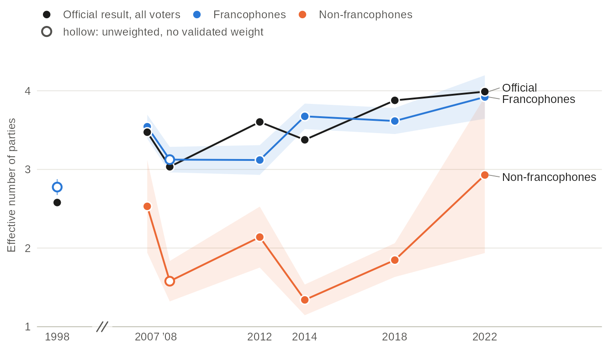
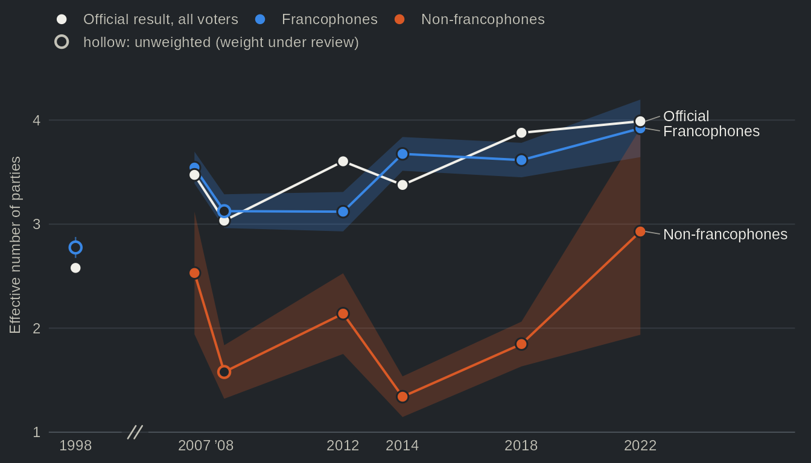

The Quebec Election Studies, with the panels and polls that accompanied them, cover seven provincial elections, from 1998 to 2022, and their data are public. Using them together is another matter. They sit in separate deposits, in SPSS or Stata files, each with a codebook of its own, and the wording of a question often changed from one study to the next. qesR brings them into R. Each study loads by its code, from its original file, checked before use; its codebook, its question wording and a search across all studies work offline, in English and French. qesR also harmonizes the 11 studies of 1998 to 2022 into one data frame, question by question, with a comparability grade for each study’s question and a reason for each missing value. In other words, a question about 25 years of Quebec elections can be answered within each study and then compared, without recoding every file by hand.
Get started goes from a study code to a weighted estimate. It runs offline, on a small synthetic study that ships with qesR.
What the studies show
Two results from the examples. Each estimate is made within one study, with that study’s weight where it has one and a 95% confidence interval; nothing is pooled across studies.




Examples
Each page takes a common belief about Quebec elections and sets it against the studies.
- From two parties to four: the vote fragmented from 1998 to 2022, but mainly among francophones, and within each sovereignty camp rather than across them.
- Are young Quebecers still the most pro-independence?: the youngest francophones were the most likely to vote Yes in 2007 and the least likely in 2022, mostly through change within cohorts.
- Two dimensions: sovereignty and left-right: the national question structures the vote less than in 2012, and the left-right scale has not taken its place.
- Who votes?: the young report voting less at every election since 1998, and interest in politics accounts for only a small part of the gap.
- Are Quebec elections decided during the campaign?: the same respondents before and after the vote show that a campaign moves many voters but, on net, few votes.
- Do surveys miss the Liberals?: the Liberal vote was under-reported from 2007 to 2014, but the gap faded in 2018 and 2022, and the winner falls short more often than not.
- Recipes: the code, step by step, to ask whether the language divide in the Liberal vote narrowed as the sovereignty question receded.
Installation
# install.packages("remotes")
remotes::install_github("ThomasGareau/qesR")Once qesR is accepted on CRAN, install.packages("qesR") will do the same. A first session:
library(qesR)
qes_studies() # the studies, offline
qes2018 <- get_qes("qes2018") # one study, from its original file
qes_search("souverain|sovereign") # a question, in every study
h <- qes_harmonize(targets = "vote_choice") # the vote, in six studies
d <- qes_decon() # every study in one flat file, relaxedCiting qesR
Work that uses qesR should cite the package and each study it draws on. qes_cite() writes both, with each dataset’s DOI:
Citing qesR and the studies gives the citation of every study.
Licence
The code of qesR is under the MIT licence. The data are not part of the package: qesR downloads each study from its deposit on Borealis or the Harvard Dataverse. Most studies are released under CC0; the 2022 study, and the metadata qesR ships from it, are under CC BY-NC 4.0 (attribution, no commercial use). Details and the required attribution.
Also on this site
The study catalog, how harmonization works, one file for every study with qes_decon(), the coverage of each study, the variable reference, the validation against official results, the merged file and the function reference. For code written with an earlier version of qesR: upgrading.